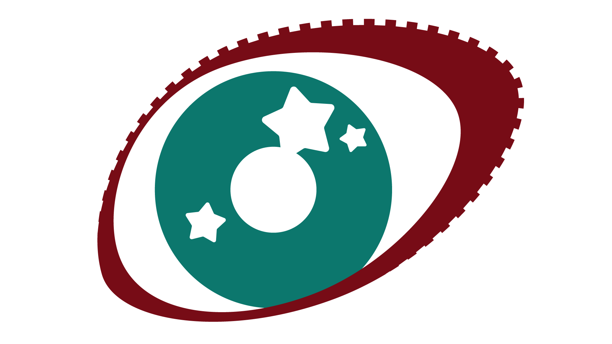

Emotive Eye
For the vector emotive eye my first thought was to do something in an anime style but wanted to avoid just doing the cliche big anime eye. I went with something more upturned and almond shaped, then copied the outline of the eye and transformed it unevenly to mimic eyeliner and eyeshadow. By using a large iris and keeping it largely centered while mostly but not entirely surrounded by white sclera I gave it the impression of being a wide open eye without being too wide.
Without the rest of the face or an eyebrow to specify the emotion it could have been one of a number of them like shock or fear or curiosity, so I thought about some ways that I could narrow it down. Thinking back to anime I remembered how they will often turn the pupil into a star to denote being ‘starstruck’ with intense admiration or interest, but instead of doing that specifically I decided to decorate the iris with stars like they’re reflected off the surface.
The assignment asked for at least two different styles of lines so after playing around with some different ideas that didn’t work out that well I had the idea to try and mimic eyelashes using a dotted line, then went a bit further to give it a thinner weight at the edges and thicker where the lashes would be larger.
Finally, playing around with the colors and exploring what the compliments of different common eye colors would be I eventually settled on a blue-green which worked well with the idea of a starry sky which provided a reddish/maroon color that fit the darker lashes.